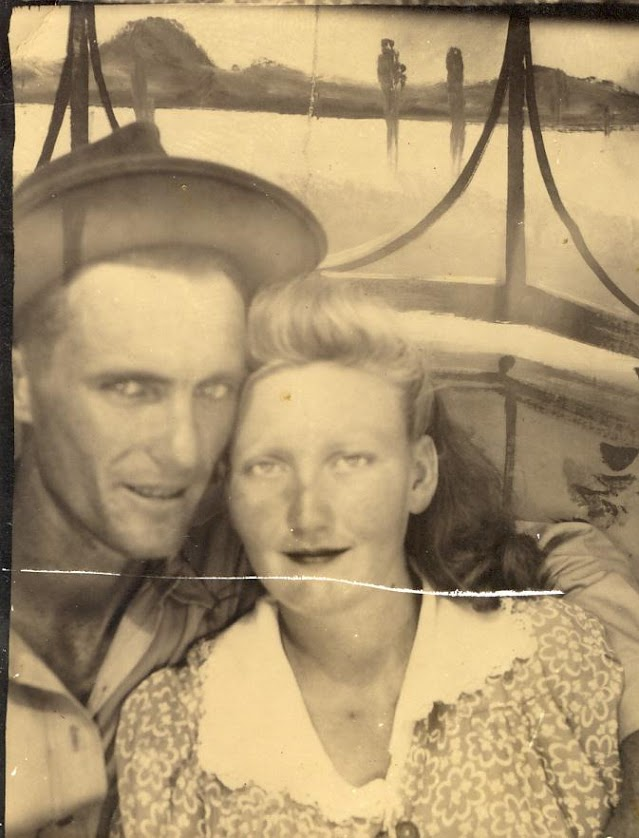

Myrtice Irene Hurst
Life Events
Family
Spouse: James Talmadge Herrin Sr.
Military Service
No military service information has been added.
Biography
Biography information has not yet been added.
Photos

Sources
-
1950 United States Census - James Talmadge Herrin Household
Type: CensusThe 1950 United States Census records James Talmadge Herrin and his wife, Myrtice Irene Herrin, living in Lake Butler, Union County, Florida, with their children James Talmadge Jr., William Melvin, and Diane. James was 30 and born in Georgia; Myrtice was 28 and born in Florida.
Location: Lake Butler, Union County, Florida, United States
Household Members:
- James Talmadge Herrin - Head - age 30 - born Georgia
- Myrtice Irene Herrin - Wife - age 28 - born Florida
- James Talmadge Herrin Jr. - Son - age 2 - born Florida
- William Melvin Herrin - Son - age recorded as 1 - born Florida
- Diane Herrin - Daughter - age 1 - born Florida
Supports: Residence of James Talmadge Herrin and family in Lake Butler, Union County, Florida, in 1950, Marriage of James Talmadge Herrin and Myrtice Irene Herrin, Presence of children James Talmadge Jr., William Melvin, and Diane in the household